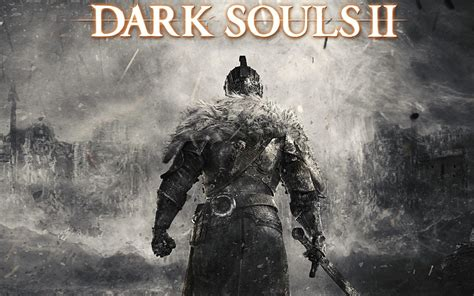

Home | Dark Soul's 1 | Dark Soul's 3 |Other Games
Dark Soul's 2 is the sequel to Dark Soul's and was released in March of 2014. FromSoftware also developed this game, later on realeasing Dark Soul's 3, Bloodborne and Elden Ring.
Similar to Dark Soul's, you create your own character and are sent to explore the world, you'll encounter bosses and a varying enemies.
| Catagory | Score |
|---|---|
| Gameplay | 6.5/10 |
| The gameplay in Dark Soul's 2 was pretty different when compared to the first game, there was a new attribute to level up called adaptability, which changed the gameplay in unexpected ways. They also introduced a new mechanic, dual weilding, which allows player to use 2 weapons at the same time providing they had the correct stats. | |
| World | 7/10 |
| The world of Dark Soul's 2 is interesting, makes the player want to explore and find out what the world has to offer. Another mechanic they added in this game was the addition of fast travel, when you first rest at a bonfire, you can they travel to it from any other bonfire you have previously been to. This was a massive improvement compared to the first game in which you had to run everywhere. | |